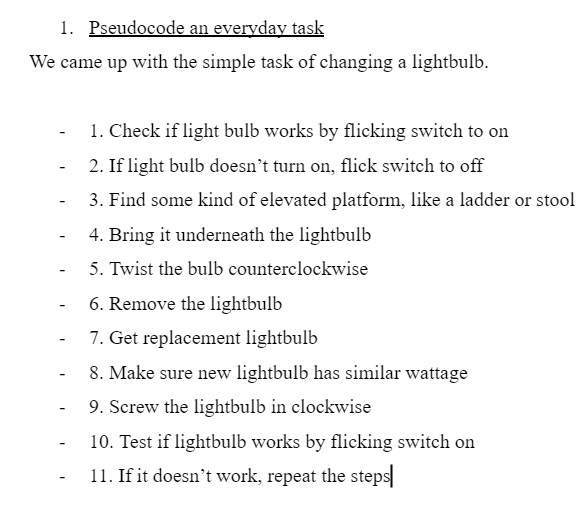
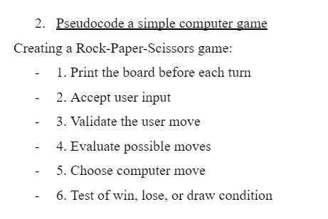

Lab 4 - Pseudocode and Problem-solving
Challenge
Come up with pseudocode for an every day task, simple computer game, and turning it into comments.
Problems
A difficult thing for me was coming up with a topic to turn into pseudocode. I was unsure on how to properly format the text in the code block, so that was the most difficult for me.
Reflection
I thought this assignment was quite simple, as it is just breaking down an action/topic into steps. A lot of energy was put into breaking down the topics into steps.
Results

Above is our pseudocoding of a task, which is changing a lightbulb.
Above is our pseudocoding of a simple computer game, Rock-Paper-Scissors.
// Rock-Paper-Scissors
// An implementation of the game
// Colby DaoJensen (cdaojens@ucsc.edu) and Nikolas Makranyi (nmakrany@ucsc.edu)
// October 2024
// Constants
// Functions
// Print the board before each turn
// Loop through each option
// Ask the user to choose between three options: Rock, Paper, Scissors
// Print user move
// Print computer move
// If user wins:
// User won, print winning statement
// If user draws:
// No outcome, Print draw statement
// If user loses:
// User lost, print losing statement
// Print a newline at the end
// Return
Above is our commenting of the game Rock-Paper-Scissors.